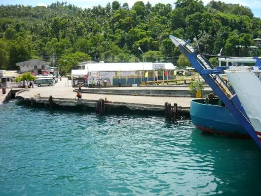
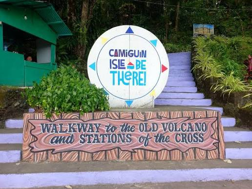
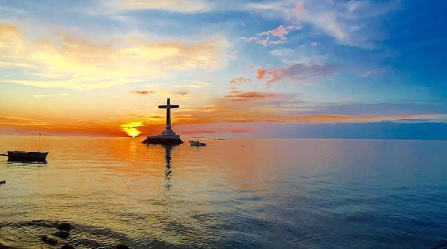
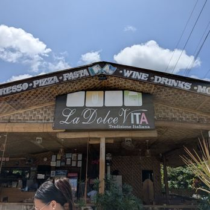
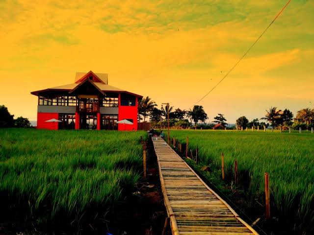
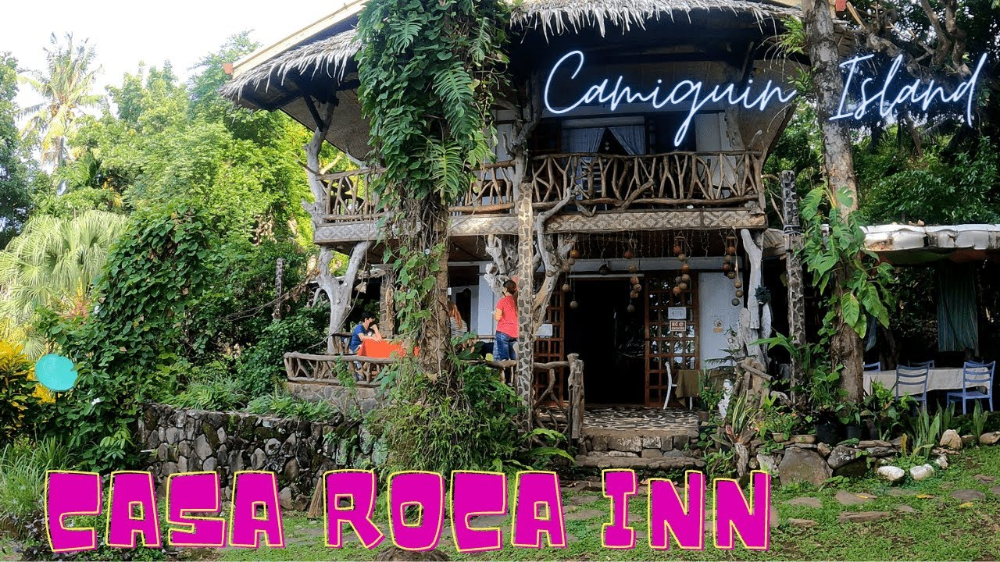
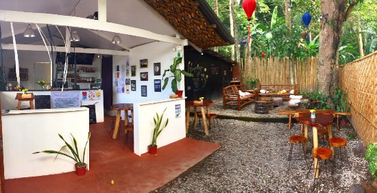
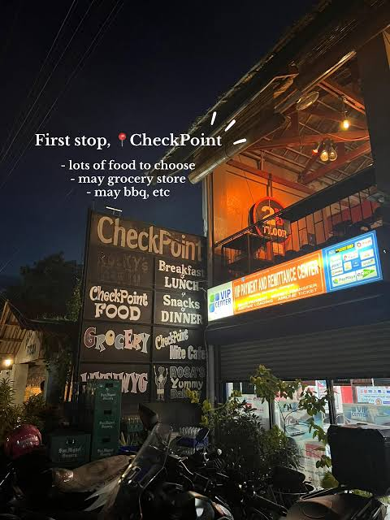

Accommodation
Ziel Hotel
Your home during your Camiguin vacation. Conveniently located in Mambajao, making it easy to explore White Island, Katibawasan Falls, Ardent Hot Spring, Sunken Cemetery, and many more attractions.
📍 Open in Google Maps
Day 1
- 📍Arrival at Benoni Port
- 🏨 Check-in at Ziet Hotel
- ⛪Old Church Ruins
- ✝️ Sunken Cemetery
- 🌋Walkway to the Old Volcano
- 🌅Sunset at Sunken Cemetery







Day 3
- Breakfast
- Check-out
- Old Spanish Church Ruins
- Free Time
- Airport Transfer
- Fly Home
🍽️ Restaurants & Coffee Shops
Discover some of the best places to eat and relax in Mambajao, Camiguin.

🍕 La Dolce Vita
Italian Restaurant
Famous for authentic Italian pizza, pasta, and homemade gelato.

🍛 Guerrera Restaurant
Filipino Cuisine
Popular for local seafood, grilled dishes, and Filipino favorites.

☕ Casa Roca Café
Coffee & Restaurant
A relaxing spot for coffee, desserts, and local meals with scenic views.
☕ Must-Visit Coffee Shops
Relax and enjoy some of the best coffee spots in Camiguin.

☕ Hayahay Café
One of Camiguin's most popular cafés, offering coffee, breakfast, seafood, and beautiful seaside views.
📍 View on Google Maps
☕ CheckPoint Food Camiguin
A popular stop for coffee, snacks, and meals after exploring Camiguin's attractions.
📍 View on Google Maps
☕ Utopia Café
A cozy hilltop café in Mambajao known for its relaxing atmosphere, coffee, desserts, and scenic mountain views.
📍 View on Google Maps